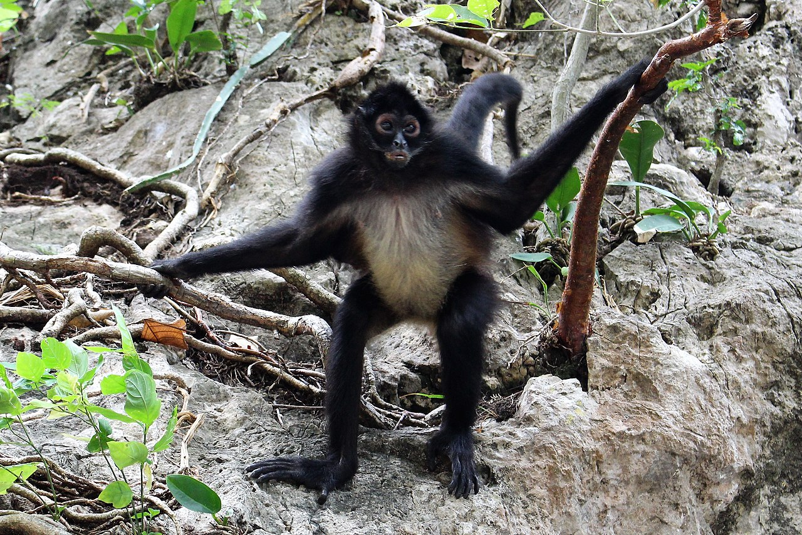

Diet and Feeding Habits of Monkeys
Monkeys are generally omnivores, which means they eat both plant-based and animal-based foods. Their diets can vary significantly depending on their species, habitat, and available food sources.
Types of Foods Monkeys Eat
- **Fruits**: Most monkeys enjoy a variety of fruits, which provide them with essential nutrients and sugars.
- **Leaves**: Some species, like Howler Monkeys, primarily eat leaves, especially when fruits are scarce.
- **Nuts and Seeds**: Monkeys are known to eat nuts and seeds, often using their hands and sometimes even tools to crack them open.
- **Insects and Small Animals**: Capuchins, for example, include insects, eggs, and even small birds or lizards in their diet.
Monkey Diets by Species
| Species | Diet | Image |
|---|---|---|
| Capuchin Monkey | Fruits, nuts, insects, small animals |  |
| Howler Monkey | Leaves, fruits, flowers |  |
| Macaque | Fruits, seeds, small insects |  |
| Spider Monkey | Fruits, nuts, leaves |  |
| Proboscis Monkey | Leaves, fruits, seeds |
Interesting Facts About Monkey Diets
Did you know that some monkey species use tools to access their food? Capuchin monkeys have been observed using stones to crack nuts, demonstrating their intelligence and adaptability.
Howler monkeys, known for their loud calls, have a unique digestive system that allows them to ferment leaves, helping them to digest tough plant material.